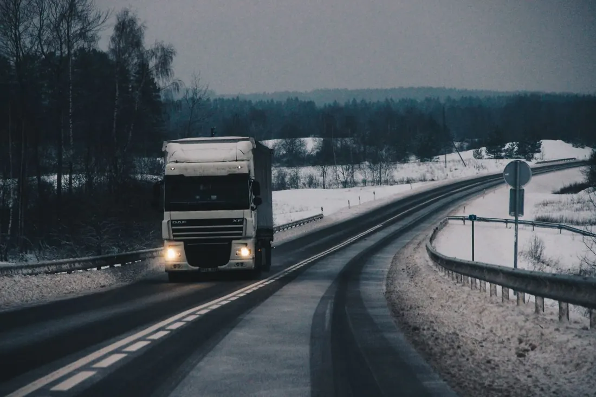
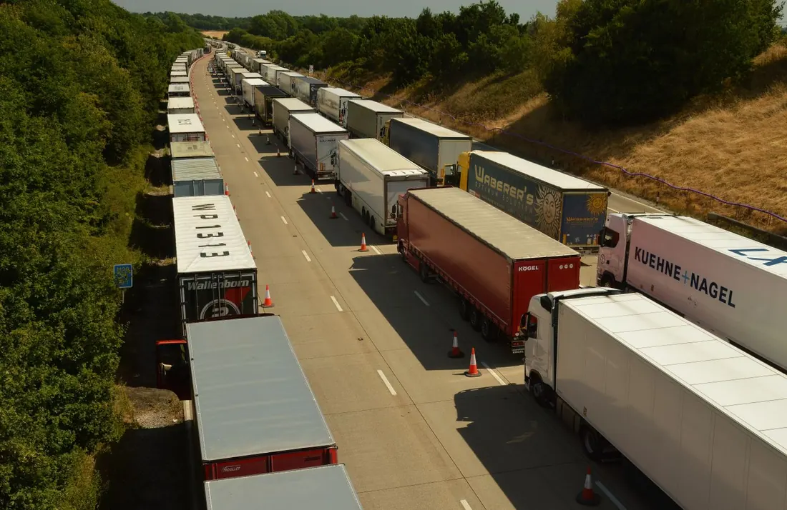
Transport drogowy towarów
Przewozy ładunków ciągnikiem siodłowym z naczepą, w tym z naczepą typu plandeka. Stałe kursy i zlecenia jednorazowe.
Zapytaj o przewózPrzewozy ciągnikiem z naczepą, a obok serwis pojazdów, magazyn i przeładunek oraz wynajem pojazdów i maszyn budowlanych.
Najważniejszy jest transport drogowy towarów. Pozostałe usługi wynikają z tego, że firma ma własne pojazdy, zaplecze i ludzi.
Miejsce na Państwa treść: zakres pochodzi z wpisu w KRS. Na gotowej stronie zostawimy tylko to, co Państwo naprawdę robią, opisane Państwa słowami.


Przewozy ładunków ciągnikiem siodłowym z naczepą, w tym z naczepą typu plandeka. Stałe kursy i zlecenia jednorazowe.
Zapytaj o przewóz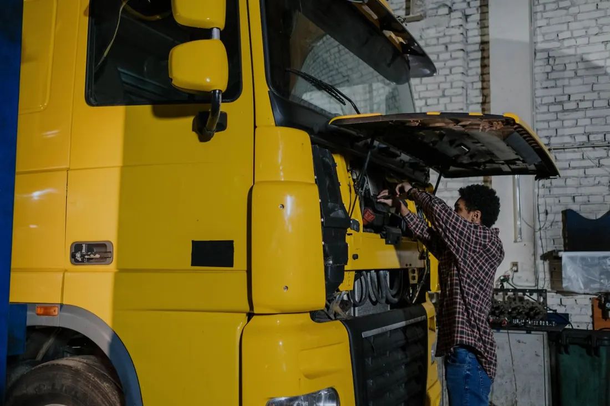
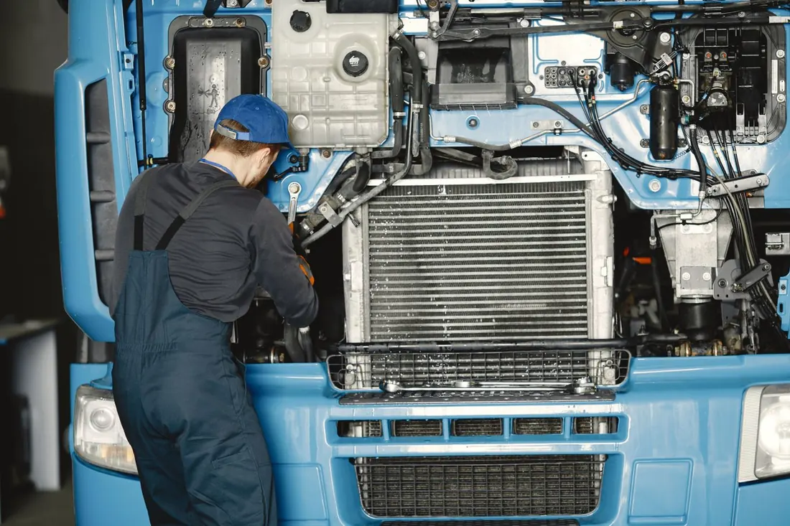
Konserwacja i naprawy samochodów, także ciężarowych. Ta sama ekipa, która dba o własny tabor.
Zapytaj o naprawę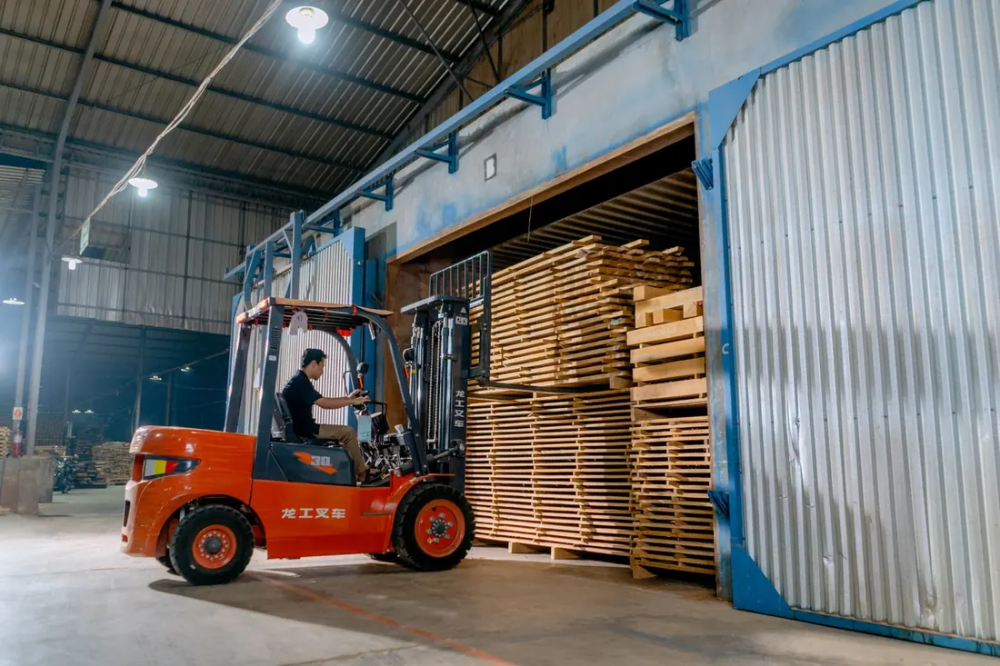
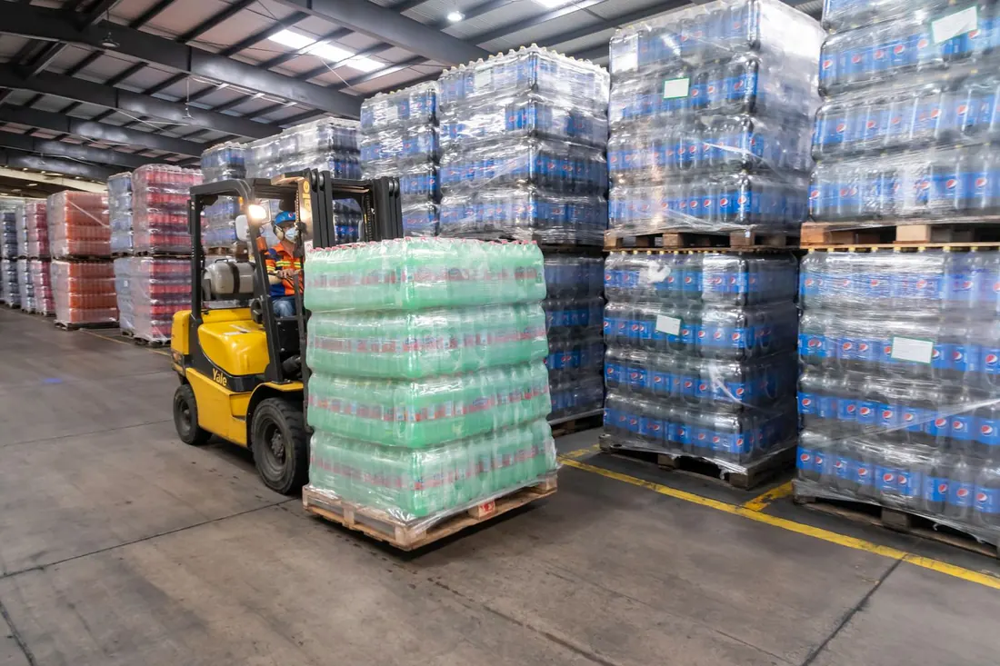
Przechowanie towaru między dostawami oraz przeładunek z jednego pojazdu na drugi.
Zapytaj o magazyn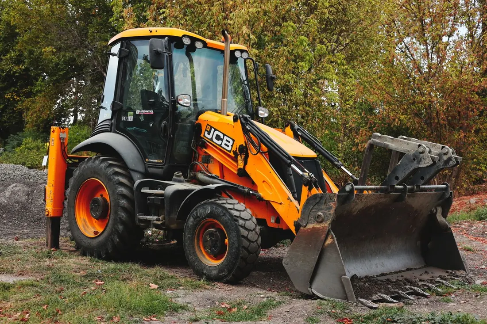
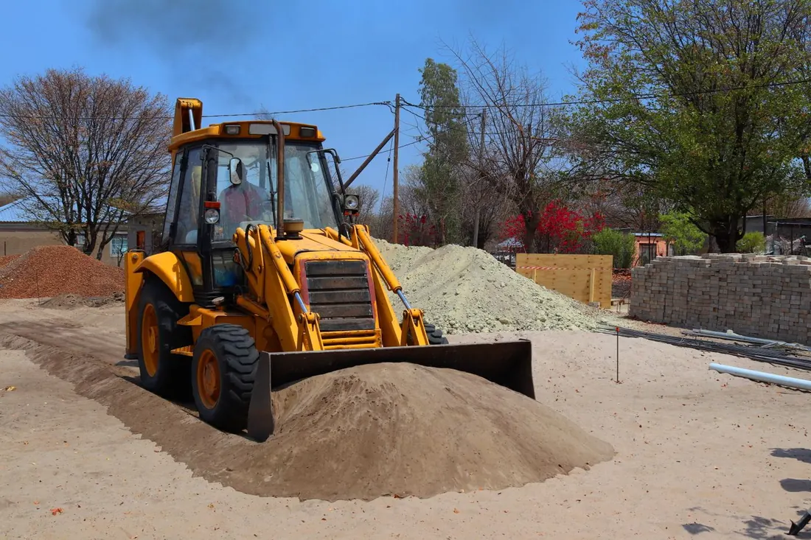
Wynajem samochodów oraz maszyn i urządzeń budowlanych na budowę lub do prac sezonowych.
Zapytaj o wynajem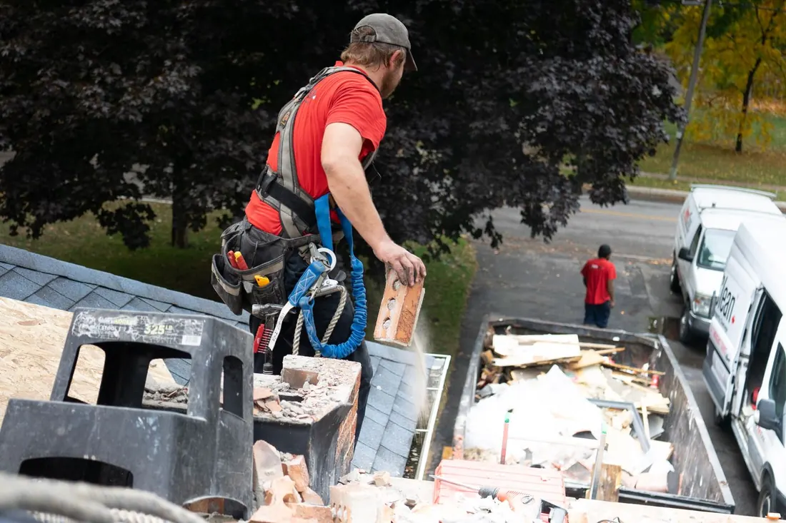
Zbieranie odpadów z budów i firm, w tym odpadów niebezpiecznych, zgodnie z wpisem w rejestrze.
Zapytaj o odbiór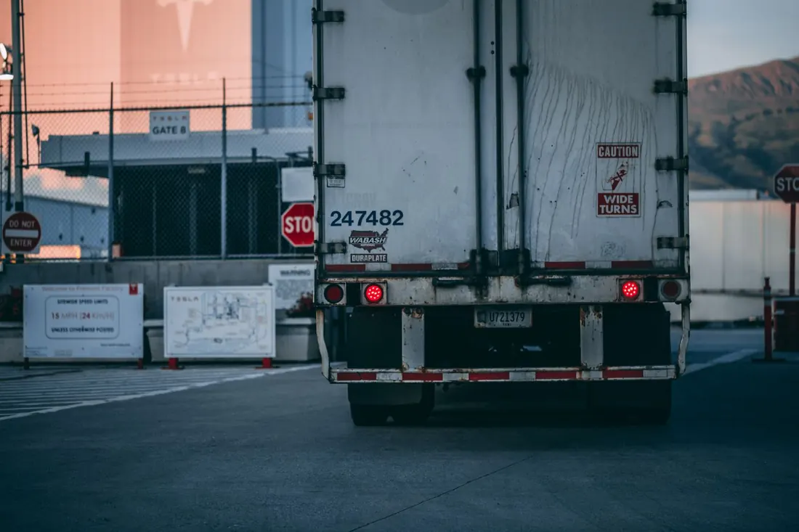
Zorganizowanie transportu, gdy własne auta są w trasie, oraz przewóz przesyłek.
Zapytaj o przewózNie wszystko trzeba wiedzieć od razu. Wystarczy trasa i rodzaj ładunku, resztę ustalimy w odpowiedzi.
Zapytaj o transport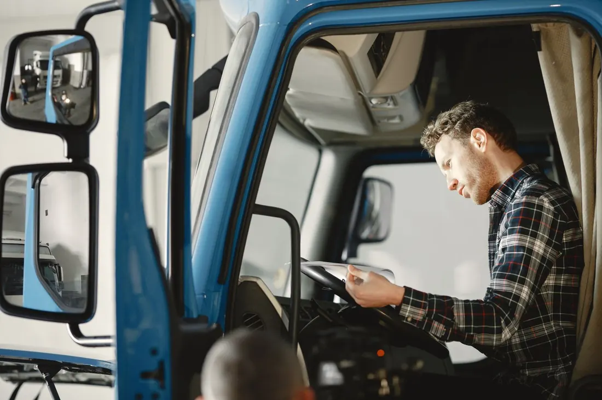
Miejsce na Państwa tabor: zdjęcie każdego zestawu lub auta, rodzaj naczepy, ładowność i liczba palet. Zdjęcia poniżej są poglądowe.
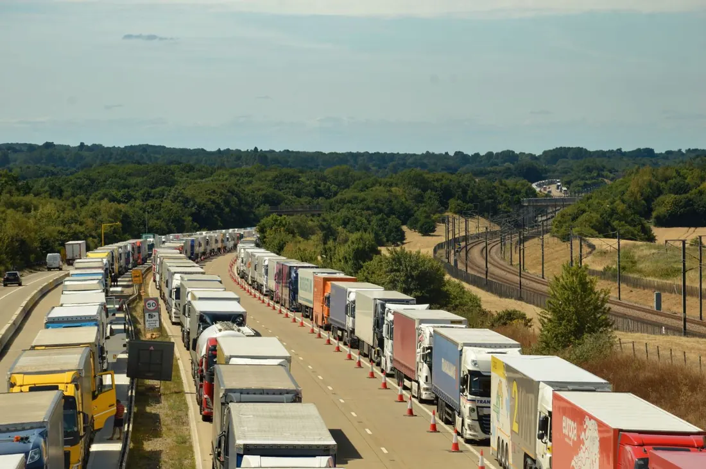
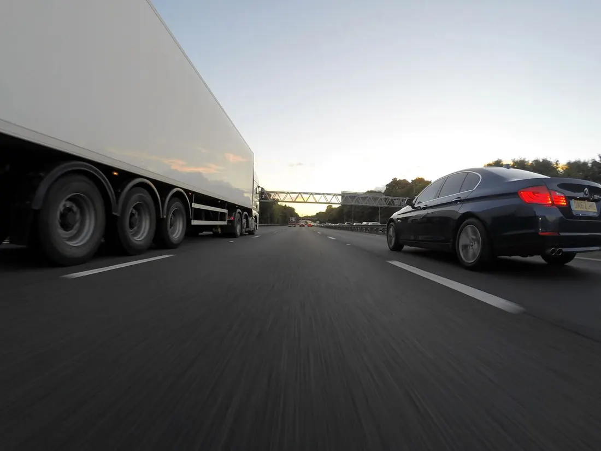
Max-Witek to spółka z Wierzchowia w gminie Wielka Wieś, na północ od Krakowa, wpisana do KRS w lutym 2015 roku. Główny profil to transport drogowy towarów, a obok niego serwis pojazdów, magazynowanie i przeładunek, wynajem oraz zbieranie odpadów.
Miejsce na kilka zdań od Państwa: od kiedy jeżdżą Państwo w transporcie, dla kogo najczęściej, na jakich trasach (kraj, Śląsk, Unia) i co wyróżnia firmę. Tu może też stanąć zdjęcie bazy albo kierowców.
Strona to najtańsze stałe miejsce na ogłoszenie o pracy: kierowca od razu widzi, czym i gdzie się jeździ.
Miejsce na aktualne ogłoszenie: trasa (np. Kraków - Śląsk, jak w Państwa ofercie na pracuj.pl), rodzaj naczepy, warunki i telefon do rekrutacji.
Wyślij zgłoszenie kierowcyZapytanie o transport można wysłać formularzem, e-mailem albo zadzwonić.